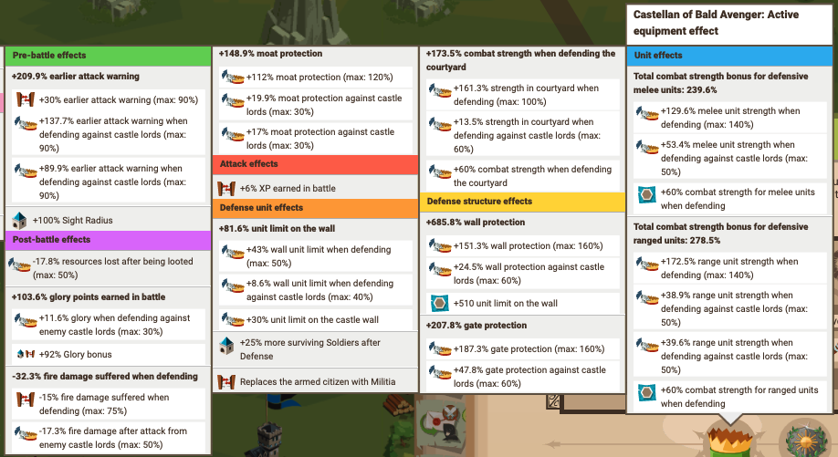
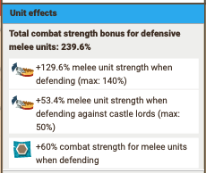

The foundation of every attack and defence lays with your equipment. It's critical to understand how to build them properly and understand the construction principles so that you are building the most efficient cast with your current equipment. It's important to know that your cast should be constantly evolving from when you get new pieces that could potentially fit together.
Understanding a cast
If you've ever looked at someone's cast and thought to yourself "how are they this strong?", 8/10 it's because they understand foundational comm/cast building. From seeing and interpreting casts, you must grasp that there is a "total effect" value and a "subsection effect" value. The cast effect values are clearly spelled out under various category headings. There are currently 7 of these headings:
- Unit Effects — how the cast impacts troops
- Defense Structure Effects — how the cast impacts the castle defensive stats (such as wall/gate)
- Attack Effects — how any additional attack effects (flanks/front/troop bonuses) impact the overall attack
- Defense Unit Effects — how any additional defensive effects (flanks/combat bonuses etc) impact the overall defence
- Pre-Battle Effects — how supplementary effects (speed, detection etc) impact the attack before it lands
- Post-Battle Effects — how supplementary effects (fire, glory, loot etc) impact the attack after it lands. This is generally not the most important category.
- Courtyard Battle Effects — currently how sizable the courtyard (CY) is and any additional CY effects

Under each of these categories, a total effect value is shown in bold and subsequent subsection effects (and there is generally more than 1) that make up the total. In general, these subsection effects are derived from:
- The main equipment effects (generally forming the bulk)
- Gem effects (generally providing a substantial addition)
- Hero effects
- Build Item effects
- Decoration effects
- Alliance effects
- Event effects

Working within the caps
Under most of the subsection effects, there is a capped limit (denoted as "max: 100%"). This is to tell you that that particular equipment effect will not provide any more than the noted limit even if you exceed it.

Despite the stat stating there is 158.7% offered by the main equipment, the maximum usable strength is 140% and thus the game will only use 140% to calculate towards any given effect. To maximise the total value, you must utilise a combination of equipment, gems, hero, and other supporting equipment.
Worked example
To emphasise this point, below is the Combat Strength for Defensive Range Units that currently has 2 subsection values — the main equipment pieces and gems. The main equipment provides 164% whilst the gems provide an additional 41.3%. However, because the main equipment subsection value exceeds the limit, the total value for Defensive Range Units will be calculated from 140% + 41.3% = 181.3% total range strength.


Equipment build order
In my opinion, there is an orderly way to build your casts:
- Weapon
- Artefact
- Chest / Helmet
The reason for this is that with 3-stat or 4-stat relic pieces, the bulk of the cast strength lays in the weapon then the artefact, with the chest or helmet pieces filling out the remaining strength cavities you may need to fill. Building out of order from this requires unnecessary additional work that could have been done the first time by following the order.
Generally you want to aim to fulfil the base strength pieces — melee, range, courtyard, flank, front — without any gems or a hero piece or tech upgrades. This will give you a solid foundation to build and adjust the cast strength. I would not focus too hard on defensive structure effects, as it doesn't matter what pieces you put on, you will get a decent enough reduction from the main pieces.
Your base cast stats
Aim to hit these from your main pieces alone:
| Stat | Target (cap) |
|---|---|
| Melee | max 140% |
| Range | max 140% |
| Courtyard | max 100% |
| Wall Unit Limit | max 50% |
Adding gems
When adding gems, consider the priority of the effects most will need for defence. These priorities are a general guide and are my opinion to get optimal strength when you try to balance available pieces.
Defence priority:
- Courtyard Strength
- Range Strength
- Wall Limit
- Melee Strength
Selecting a hero
Generally, you want to select a hero that has CY strength, melee, range, and flank limits.